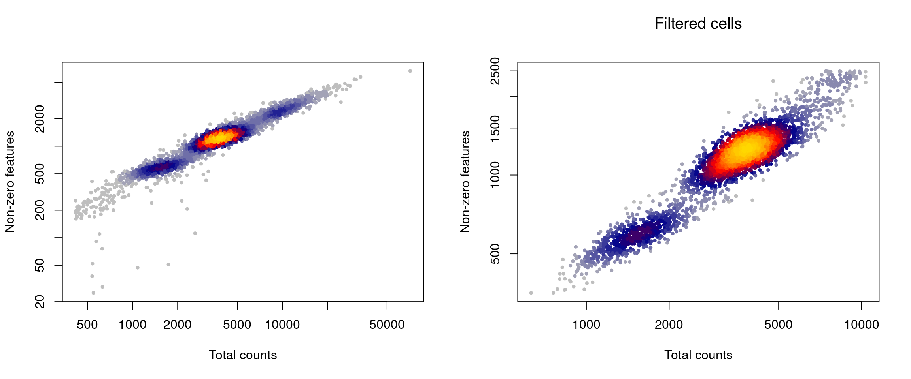
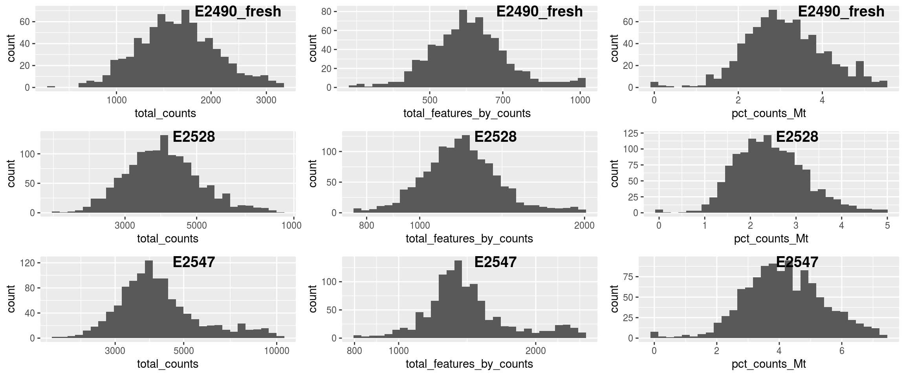
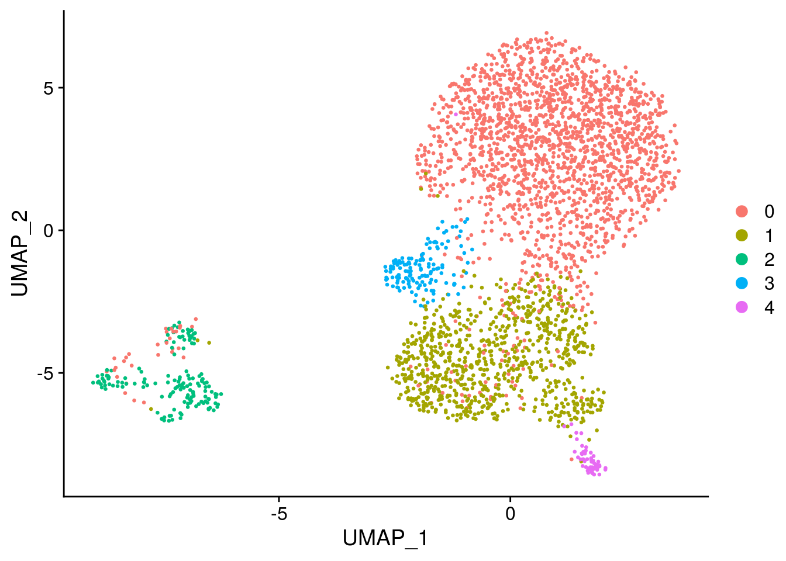
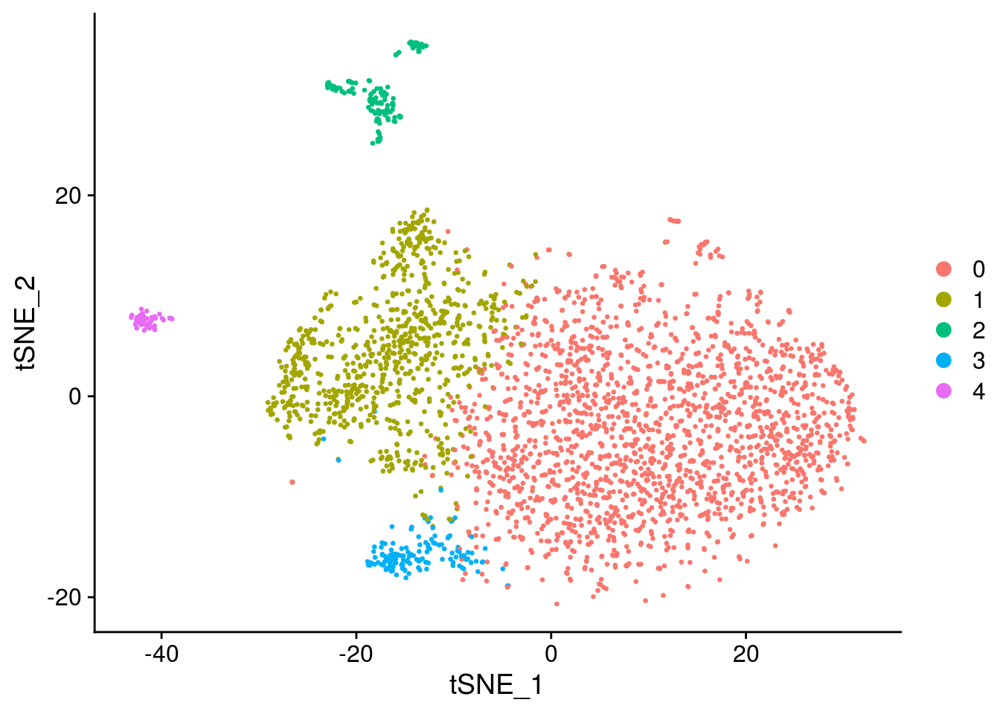
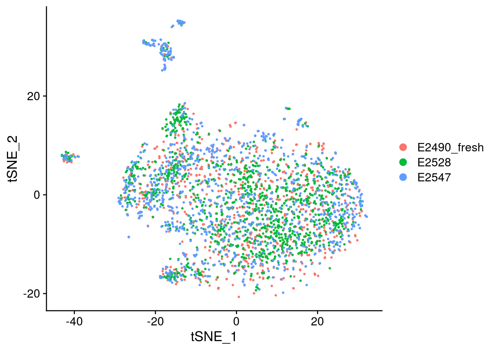
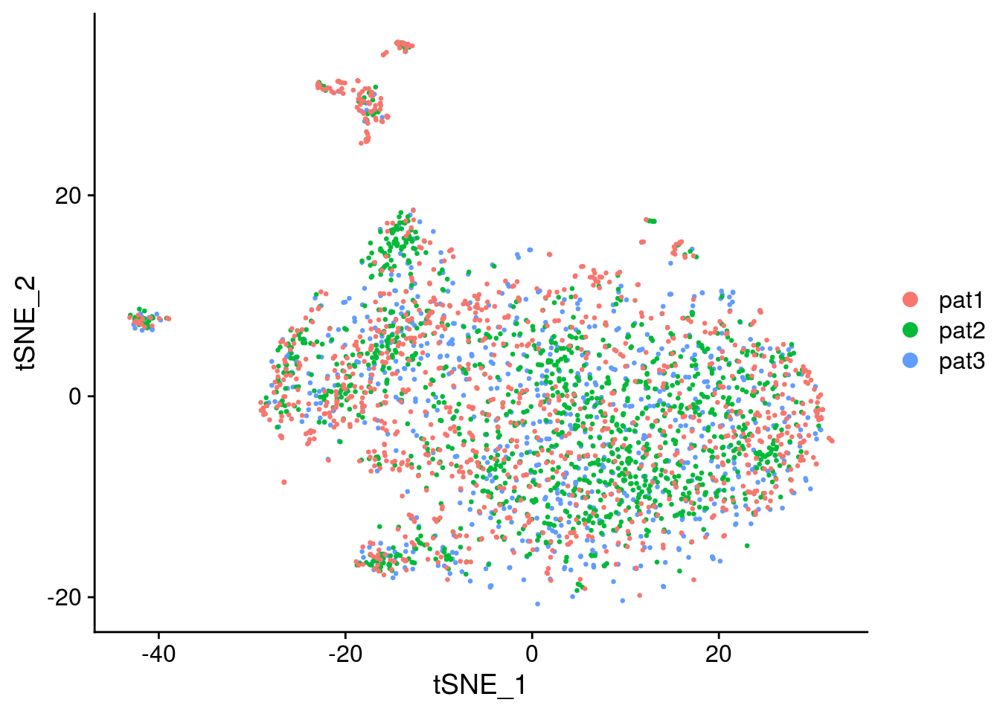
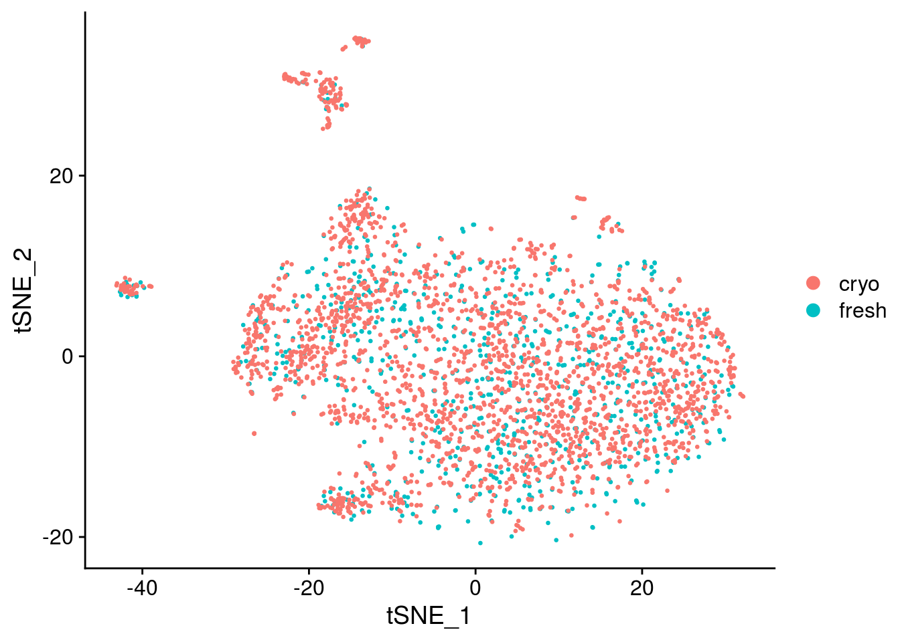

csf data
Almut Lütge
2 März 2020
CSF_pat_med
ScRNA seq data from Calini representing CSF sample from 2 individuals in different storing conditions: - fresh - fixed with MetOH - stored in 15% DMSO
suppressPackageStartupMessages({
library(plotly)
library(readr)
library(stringr)
library(edgeR)
library(pheatmap)
library(purrr)
library(scater)
library(dplyr)
library(reshape2)
library(ggplot2)
library(cowplot)
library(Matrix)
library(scran)
library(Seurat)
library(sctransform)
library(readxl)
library(DropletUtils)
library(LSD)
library(CellMixS)
library(tibble)
library(here)
library(scDblFinder)
library(plyr)
library(hrbrthemes)
library(jcolors)
})
seed <- 1000data
Load data Raw reads were mapped with Cellranger v3 against ensembl hg38
out_path <- here::here("out")
data_path <-"/home/Shared_s3it/_home_Shared_taupo_data_seq/calini_scrnaseq/FGCZ_human"
samples <- c(paste0(data_path,"/CR052"),paste0(data_path,"/CR059"),
paste0(data_path,"/CR060"))
samples <- paste0(samples, "/outs/filtered_feature_bc_matrix")
samples <- samples[file.exists(paste0(samples, "/matrix.mtx.gz"))]
sce <- DropletUtils::read10xCounts(samples=samples)
sce$dataset <- basename(gsub("/outs/filtered_feature_bc_matrix","",as.character(sce$Sample)))
# Add metadata
meta <- read_excel(paste0(data_path, "/20190312 NovaSeqRun Samples Characteristics.xlsx"))
meta <- rbind(meta, c("CR052","Human","E2490_fresh","CSF fresh"))
meta$nbCells <- as.numeric(table(sce$dataset)[meta$`Sequencing ID`])
sce$Sample <- meta[["Sample Name"]][match(sce$dataset, meta$`Sequencing ID`)]
sce$dataset <- factor(sce$dataset)
sce$media <- ifelse(grepl("fresh", sce$Sample), "fresh", "cryo")
colnames(sce) <- paste0(sce$dataset, ".", sce$Barcode)
rownames(sce) <- paste0(rowData(sce)$ID, ".", rowData(sce)$Symbol)
sce$patient <- as.factor(sce$Sample) %>% mapvalues(from = levels(.), to = c("pat3", "pat2", "pat1"))
table(sce$patient, sce$Sample)##
## E2490_fresh E2528 E2547
## pat3 986 0 0
## pat2 0 1661 0
## pat1 0 0 1441##
## pat3 pat2 pat1
## 986 1661 1441##
## cryo fresh
## 3102 986## [1] 33808 4088## [1] 4088 5## [1] 33808 3Calculate QC
#remove genes without any counts
keep_features <- rowSums(counts(sce) > 0) > 0
sce <- sce[keep_features, ]
dim(sce)## [1] 19467 4088## Mode FALSE TRUE
## logical 19454 13## Warning: 'calculateQCMetrics' is deprecated.
## Use 'perCellQCMetrics' or 'perFeatureQCMetrics' instead.Filtering
Find outlier
# # Plot filters
plotFilters <- function( sce, var="log10_total_counts", split_by="Sample", nrow=NULL,
nmads=c(2,3,5), lt=c("dashed","dotted","dotdash"), xscale="free" ){
CD <- as.data.frame(colData(sce))
if(!(var %in% colnames(CD))) stop(paste("`var`",var,"is not in `colData(sce)`!"))
if(!is.null(split_by) && !(split_by %in% colnames(CD))){
stop(paste("`split_by`",split_by,"is not in `colData(sce)`!"))
}
library(ggplot2)
library(cowplot)
d <- CD[,var,drop=F]
if(!is.null(split_by)) d$dataset <- CD[[split_by]]
p <- ggplot(d, aes_string(x=var)) + geom_histogram(color="darkblue", bins=30)
if(xscale!="free"){
if(xscale!="fixed"){
if(xscale>1 && xscale%%1==0){
xq <- .tmads(d[[var]], xscale)
xr <- range(d[[var]],na.rm=T)
xq <- c(max(xq[1],xr[1]), min(xq[2],xr[2]))
}else{
if(xscale<=1 & xscale>0){
xscale <- (1-xscale)/2
xq <- quantile(d[[var]], probs=c(xscale,1-xscale), na.rm=T)
}else{
stop("Wrong `xscale` value!")
}
}
p <- p + xlim(xq[1], xq[2])
}
}
if(!is.null(split_by)){
if(is.null(nrow)) nrow <- ceiling(length(unique(d$dataset))/3)
p <- p + facet_wrap(~dataset, scales=ifelse(xscale=="free","free","free_y"), nrow=nrow)
for(ds in unique(d$dataset)){
for(i in 1:length(nmads)){
ma <- .tmads(d[which(d$dataset==ds),var], nmads[i])
df2 <- data.frame(xint=as.numeric(ma), dataset=rep(ds,2))
p <- p + geom_vline(data=df2, aes(xintercept=xint), linetype=lt[i])
}
}
}else{
for(i in 1:length(nmads)){
df2 <- data.frame(xint=as.numeric(.tmads(d[[var]], nmads[i])))
p <- p + geom_vline(data=df2, aes(xintercept=xint), linetype=lt[i])
}
}
p
}
.tmads <- function(x, nbmads=2.5){
x2 <- nbmads*median(abs(x-median(x)))
median(x)+c(-x2,x2)
}
plotFilters(sce)

## Warning: Removed 41 rows containing non-finite values (stat_bin).## Warning: Removed 6 rows containing missing values (geom_bar).## Warning: Removed 1 rows containing missing values (geom_vline).
## Warning: Removed 1 rows containing missing values (geom_vline).
## Warning: Removed 1 rows containing missing values (geom_vline).
# Find outlier
outlierPlot <- function(cd, feature, aph=NULL, logScale=FALSE, show.legend=TRUE){
if(is.null(aph)) aph <- paste0(feature, "_drop")
if(!(aph %in% colnames(cd))) aph <- NULL
p <- ggplot(as.data.frame(cd), aes_string(x = feature, alpha = aph)) +
geom_histogram(show.legend=show.legend)
if(!is.null(aph)) p <- p + scale_alpha_manual(values = c("TRUE" = 0.4, "FALSE" = 1))
if(logScale) p <- p + scale_x_log10()
p
}
plQCplot <- function(cd, show.legend=TRUE){
ps <- lapply(split(cd,cd$Sample), sl=show.legend, FUN=function(x,sl){
list( outlierPlot( x, "total_counts", logScale=T, show.legend=sl),
outlierPlot( x, "total_features_by_counts", "total_features_drop",
logScale=T, show.legend=sl),
outlierPlot( x, "pct_counts_Mt", "mito_drop", show.legend=sl)
)
})
plot_grid( plotlist = do.call(c, ps),
labels=rep(basename(names(ps)), each=length(ps[[1]])),
ncol=length(ps[[1]]),
label_x=0.5 )
}
#Filtering
sce$total_counts_drop <- isOutlier(sce$total_counts, nmads = 2.5,
type = "both", log = TRUE, batch=sce$Sample)
sce$total_features_drop <- isOutlier(sce$total_features_by_counts, nmads = 2.5,
type = "both", log = TRUE, batch=sce$Sample)
sce$mito_drop <- sce$pct_counts_Mt > 5 &
isOutlier(sce$pct_counts_Mt, nmads = 2.5, type = "higher", batch=sce$Sample)
sce$isOutlier <- sce$total_counts_drop | sce$total_features_drop | sce$mito_drop
# quality plot
plQCplot(colData(sce), show.legend=FALSE)## `stat_bin()` using `bins = 30`. Pick better value with `binwidth`.
## `stat_bin()` using `bins = 30`. Pick better value with `binwidth`.
## `stat_bin()` using `bins = 30`. Pick better value with `binwidth`.
## `stat_bin()` using `bins = 30`. Pick better value with `binwidth`.
## `stat_bin()` using `bins = 30`. Pick better value with `binwidth`.
## `stat_bin()` using `bins = 30`. Pick better value with `binwidth`.
## `stat_bin()` using `bins = 30`. Pick better value with `binwidth`.
## `stat_bin()` using `bins = 30`. Pick better value with `binwidth`.
## `stat_bin()` using `bins = 30`. Pick better value with `binwidth`.


Check thresholds
# Check outlier
mets <- c("total_counts_drop","total_features_drop","mito_drop")
sapply(mets, FUN=function(x){ sapply(mets, y=x, function(x,y){ sum(sce[[x]] & sce[[y]]) }) })## total_counts_drop total_features_drop mito_drop
## total_counts_drop 519 514 57
## total_features_drop 514 826 62
## mito_drop 57 62 132nbcells <- cbind(table(sce$Sample),table(sce$Sample[!sce$isOutlier]))
colnames(nbcells) <- c("cells total","cells after filtering")
nbcells## cells total cells after filtering
## E2490_fresh 986 788
## E2528 1661 1308
## E2547 1441 1094layout(matrix(1:2,nrow=1))
LSD::heatscatter( sce$total_counts, sce$total_features_by_counts, xlab="Total counts", ylab="Non-zero features", main="",log="xy")
w <- which(!sce$isOutlier)
LSD::heatscatter( sce$total_counts[w], sce$total_features_by_counts[w], xlab="Total counts", ylab="Non-zero features", main="Filtered cells",log="xy")
# summary of cells kept
cct <- table(sce$isOutlier, sce$Sample)
row.names(cct) <- c("Kept", "Filtered out")
cct##
## E2490_fresh E2528 E2547
## Kept 788 1308 1094
## Filtered out 198 353 347# drop outlier cells
sce <- sce[,!sce$isOutlier]
# require count > 1 in at least 20 cells
sce <- sce[which(rowSums(counts(sce)>1)>=20),]
dim(sce)## [1] 3613 3190## `stat_bin()` using `bins = 30`. Pick better value with `binwidth`.
## `stat_bin()` using `bins = 30`. Pick better value with `binwidth`.
## `stat_bin()` using `bins = 30`. Pick better value with `binwidth`.
## `stat_bin()` using `bins = 30`. Pick better value with `binwidth`.
## `stat_bin()` using `bins = 30`. Pick better value with `binwidth`.
## `stat_bin()` using `bins = 30`. Pick better value with `binwidth`.
## `stat_bin()` using `bins = 30`. Pick better value with `binwidth`.
## `stat_bin()` using `bins = 30`. Pick better value with `binwidth`.
## `stat_bin()` using `bins = 30`. Pick better value with `binwidth`.
##
## E2490_fresh E2528 E2547
## 788 1308 1094Remove doublets
##
## doublet singlet
## 48 3142Normalization
## clusters
## 1 2 3 4 5 6 7 8 9
## 326 632 204 615 552 177 227 277 132sce <- computeSumFactors(sce, min.mean=0.1, cluster=clusters) ##cluster information added
sce <- scater::normalize(sce)## Warning: 'normalizeSCE' is deprecated.
## Use 'logNormCounts' instead.
## See help("Deprecated")## Warning: 'centreSizeFactors' is deprecated.
## See help("Deprecated")Integration
# create SeuratObject
seurat <- as.Seurat(sce)
# normalize, find variable genes, and scale
sl <- lapply(unique(as.character(seurat@meta.data$Sample)), FUN=function(x){
x <- subset(seurat, cells=which(seurat@meta.data$Sample==x))
x <- ScaleData(x)
x <- FindVariableFeatures(x, verbose=F)
# use non-standardized variance
v <- x@assays$RNA@meta.features[["vst.variance"]]
VariableFeatures(x) <- row.names(x@assays$RNA@meta.features)[order(v, decreasing=TRUE)[1:500]]
x
})## Centering and scaling data matrix
## Centering and scaling data matrix
## Centering and scaling data matrix## Computing 2000 integration features## Scaling features for provided objects## Finding all pairwise anchors## Running CCA## Merging objects## Finding neighborhoods## Finding anchors## Found 3462 anchors## Filtering anchors## Retained 1812 anchors## Extracting within-dataset neighbors## Running CCA## Merging objects## Finding neighborhoods## Finding anchors## Found 3239 anchors## Filtering anchors## Retained 1902 anchors## Extracting within-dataset neighbors## Running CCA## Merging objects## Finding neighborhoods## Finding anchors## Found 4066 anchors## Filtering anchors## Retained 2410 anchors## Extracting within-dataset neighborsseurat <- IntegrateData(anchorset = anchors, dims = seq_len(20),
features.to.integrate = rownames(sce))## Merging dataset 1 into 3## Extracting anchors for merged samples## Finding integration vectors## Finding integration vector weights## Integrating data## Merging dataset 2 into 3 1## Extracting anchors for merged samples## Finding integration vectors## Finding integration vector weights## Integrating data## Warning: Adding a command log without an assay associated with itDimension reduction
seurat <- RunPCA(object = seurat, npcs = 30, verbose = FALSE)
seurat <- RunTSNE(object = seurat, perplexity = 30,reduction = "pca", dims = seq_len(20),
seed.use = seed, do.fast = TRUE, verbose = FALSE)
seurat <- RunUMAP(object = seurat, reduction = "pca", dims = seq_len(20),
seed.use = seed, verbose = FALSE, n.neighbors = 30, min.dist = 0.5)## Warning: The default method for RunUMAP has changed from calling Python UMAP via reticulate to the R-native UWOT using the cosine metric
## To use Python UMAP via reticulate, set umap.method to 'umap-learn' and metric to 'correlation'
## This message will be shown once per sessionClustering
seurat <- FindNeighbors(object = seurat, reduction = "pca", dims = seq_len(20), verbose = FALSE)
for (res in c(0.1, 0.2, 0.4, 0.8, 1, 1.2, 2))
seurat <- FindClusters(object = seurat, resolution = res, random.seed = seed, verbose = FALSE)
seurat <- SetIdent(seurat, value="integrated_snn_res.0.2")
seurat@meta.data$cluster <- seurat$integrated_snn_res.0.2
DimPlot(seurat, reduction = "umap")




Convert seurat to sce
sce <- sce[, colnames(seurat)]
counts <- assays(sce)[["counts"]]
sce <- as.SingleCellExperiment(seurat)
assays(sce)[["counts"]] <- counts
# Save data
saveRDS(sce, file = paste0(out_path, "/sce_csf_media.rds"))
# Save without media effect
sce <- sce[,!sce$patient %in% "pat3"]
saveRDS(sce, file = paste0(out_path, "/sce_csf_patient.rds"))#Add random batch label
#normalize to get rid of seurat integrated slot in logcounts and redDims
clusters <- quickCluster(sce, use.ranks=FALSE)
table(clusters)## clusters
## 1 2 3 4 5 6 7 8 9
## 345 470 436 200 243 162 128 161 223sce <- computeSumFactors(sce, min.mean=0.1, cluster=clusters)
sce <- logNormCounts(sce)
sce <- runPCA(sce, ncomponents = 10, ntop = 1000)
sce <- runUMAP(sce)
sce <- runTSNE(sce)
label <- as.factor(colData(sce)$patient)
batch_label <- list()
names_list <- c()
seed <- 1234
for(i in c(10,20,30,40,50,60,70,80,90)){
label_new <- label
lab_pc <- sample_frac(as.data.frame(label), i/100)
label_new[as.numeric(rownames(lab_pc))] <- sample(label, length(rownames(lab_pc)), replace = TRUE)
batch_label[[i/10]] <- label_new
names_list[i/10] <- paste0("batch", i)
}
names(batch_label) <- names_list
colData(sce)$batch0 <- label
colData(sce)$batch90 <- batch_label$batch90
colData(sce)$batch80 <- batch_label$batch80
colData(sce)$batch70 <- batch_label$batch70
colData(sce)$batch60 <- batch_label$batch60
colData(sce)$batch50 <- batch_label$batch50
colData(sce)$batch40 <- batch_label$batch40
colData(sce)$batch30 <- batch_label$batch30
colData(sce)$batch20 <- batch_label$batch20
colData(sce)$batch10 <- batch_label$batch10
colData(sce)$batch100 <- sample(label, length(label), replace = TRUE)
## Visualize randomization
batch_list <- str_subset(names(colData(sce)), "batch")
lapply(batch_list, function(feature_name){
visGroup(sce, feature_name, dim_red= "TSNE")
})## [[1]]
##
## [[2]]
##
## [[3]]
##
## [[4]]
##
## [[5]]
##
## [[6]]
##
## [[7]]
##
## [[8]]
##
## [[9]]
##
## [[10]]
##
## [[11]]
Generate figure plot
## Visualize randomization
#To debug: sce <- readRDS("/run/user/1000/gvfs/sftp:host=imlstaupo.uzh.ch/home/aluetg/batch_dataset/out/sce_csf_patient_random.rds")
batch_list <- str_subset(names(colData(sce)), "batch")
#generate figure random
tsne_long <- lapply(batch_list, function(batch_nam){
tab <- data.frame("tsne1" = reducedDims(sce)[["TSNE"]][,1],
"tsne2" = reducedDims(sce)[["TSNE"]][,2],
"patient" = as.factor(colData(sce)[ ,batch_nam]),
"randomness" = batch_nam)
}) %>% bind_rows()## Warning in bind_rows_(x, .id): Unequal factor levels: coercing to character## Warning in bind_rows_(x, .id): binding character and factor vector, coercing
## into character vector
## Warning in bind_rows_(x, .id): binding character and factor vector, coercing
## into character vector
## Warning in bind_rows_(x, .id): binding character and factor vector, coercing
## into character vector
## Warning in bind_rows_(x, .id): binding character and factor vector, coercing
## into character vector
## Warning in bind_rows_(x, .id): binding character and factor vector, coercing
## into character vector
## Warning in bind_rows_(x, .id): binding character and factor vector, coercing
## into character vector
## Warning in bind_rows_(x, .id): binding character and factor vector, coercing
## into character vector
## Warning in bind_rows_(x, .id): binding character and factor vector, coercing
## into character vector
## Warning in bind_rows_(x, .id): binding character and factor vector, coercing
## into character vector
## Warning in bind_rows_(x, .id): binding character and factor vector, coercing
## into character vector
## Warning in bind_rows_(x, .id): binding character and factor vector, coercing
## into character vectorbatch_order <- c("batch0", "batch10", "batch20","batch30", "batch40", "batch50",
"batch60", "batch70", "batch80", "batch90", "batch100")
cols_pat <- cols_data[1:length(levels(as.factor(tsne_long$patient)))] %>%
set_names(levels(as.factor(tsne_long$patient)))
tsne_long$randomness <- factor(tsne_long$randomness, levels = batch_order)
p <- ggplot(tsne_long, aes(x = tsne1, y = tsne2, color = patient)) +
geom_point(size = 0.4) +
scale_color_manual(values = cols_pat) +
theme_ipsum() +
theme(
legend.position="top",
plot.title = element_text(size=14),
panel.grid.major = element_blank(),
axis.text.x = element_blank(),
axis.text.y = element_blank(),
) +
ggtitle("Gradual increased randomness") +
facet_wrap(~randomness)
p
## R version 3.6.1 (2019-07-05)
## Platform: x86_64-pc-linux-gnu (64-bit)
## Running under: Ubuntu 16.04.6 LTS
##
## Matrix products: default
## BLAS: /usr/local/R/R-3.6.1/lib/libRblas.so
## LAPACK: /home/mark/miniconda3/lib/libmkl_rt.so
##
## locale:
## [1] LC_CTYPE=en_US.UTF-8 LC_NUMERIC=C
## [3] LC_TIME=en_US.UTF-8 LC_COLLATE=en_US.UTF-8
## [5] LC_MONETARY=en_US.UTF-8 LC_MESSAGES=en_US.UTF-8
## [7] LC_PAPER=en_US.UTF-8 LC_NAME=C
## [9] LC_ADDRESS=C LC_TELEPHONE=C
## [11] LC_MEASUREMENT=en_US.UTF-8 LC_IDENTIFICATION=C
##
## attached base packages:
## [1] parallel stats4 stats graphics grDevices utils datasets
## [8] methods base
##
## other attached packages:
## [1] jcolors_0.0.4 hrbrthemes_0.8.0
## [3] plyr_1.8.5 scDblFinder_1.1.5
## [5] here_0.1 tibble_2.1.3
## [7] CellMixS_1.2.3 kSamples_1.2-9
## [9] SuppDists_1.1-9.5 LSD_4.0-0
## [11] DropletUtils_1.6.1 readxl_1.3.1
## [13] sctransform_0.2.1 Seurat_3.1.3
## [15] scran_1.14.6 Matrix_1.2-17
## [17] cowplot_1.0.0 reshape2_1.4.3
## [19] dplyr_0.8.4 scater_1.14.6
## [21] SingleCellExperiment_1.8.0 SummarizedExperiment_1.16.1
## [23] DelayedArray_0.12.2 BiocParallel_1.20.1
## [25] matrixStats_0.55.0 Biobase_2.46.0
## [27] GenomicRanges_1.38.0 GenomeInfoDb_1.22.0
## [29] IRanges_2.20.2 S4Vectors_0.24.3
## [31] BiocGenerics_0.32.0 purrr_0.3.3
## [33] pheatmap_1.0.12 edgeR_3.28.0
## [35] limma_3.42.2 stringr_1.4.0
## [37] readr_1.3.1 plotly_4.9.2
## [39] ggplot2_3.3.2
##
## loaded via a namespace (and not attached):
## [1] reticulate_1.14 R.utils_2.9.2 tidyselect_1.0.0
## [4] htmlwidgets_1.5.1 grid_3.6.1 Rtsne_0.15
## [7] munsell_0.5.0 codetools_0.2-16 mutoss_0.1-12
## [10] ica_1.0-2 statmod_1.4.34 future_1.16.0
## [13] withr_2.1.2 colorspace_1.4-1 knitr_1.28
## [16] ROCR_1.0-7 Rttf2pt1_1.3.8 gbRd_0.4-11
## [19] listenv_0.8.0 labeling_0.3 Rdpack_0.11-1
## [22] GenomeInfoDbData_1.2.2 mnormt_1.5-6 farver_2.0.3
## [25] rhdf5_2.30.1 rprojroot_1.3-2 vctrs_0.2.3
## [28] TH.data_1.0-10 xfun_0.12 randomForest_4.6-14
## [31] R6_2.4.1 ggbeeswarm_0.6.0 rsvd_1.0.3
## [34] isoband_0.2.2 locfit_1.5-9.1 bitops_1.0-6
## [37] assertthat_0.2.1 scales_1.1.0 multcomp_1.4-12
## [40] beeswarm_0.2.3 gtable_0.3.0 npsurv_0.4-0
## [43] globals_0.12.5 sandwich_2.5-1 rlang_0.4.4
## [46] systemfonts_0.2.3 splines_3.6.1 extrafontdb_1.0
## [49] lazyeval_0.2.2 yaml_2.2.1 backports_1.1.5
## [52] extrafont_0.17 tools_3.6.1 gplots_3.0.3
## [55] RColorBrewer_1.1-2 ggridges_0.5.2 TFisher_0.2.0
## [58] Rcpp_1.0.3 zlibbioc_1.32.0 RCurl_1.98-1.1
## [61] pbapply_1.4-2 viridis_0.5.1 zoo_1.8-7
## [64] ggrepel_0.8.1 cluster_2.1.0 magrittr_1.5
## [67] RSpectra_0.16-0 data.table_1.12.8 lmtest_0.9-37
## [70] RANN_2.6.1 mvtnorm_1.1-0 fitdistrplus_1.0-14
## [73] hms_0.5.3 lsei_1.2-0 evaluate_0.14
## [76] gridExtra_2.3 compiler_3.6.1 KernSmooth_2.23-16
## [79] crayon_1.3.4 R.oo_1.23.0 htmltools_0.4.0
## [82] tidyr_1.0.2 RcppParallel_4.4.4 MASS_7.3-51.4
## [85] rappdirs_0.3.1 R.methodsS3_1.8.0 gdata_2.18.0
## [88] metap_1.3 igraph_1.2.4.2 pkgconfig_2.0.3
## [91] sn_1.5-5 numDeriv_2016.8-1.1 vipor_0.4.5
## [94] dqrng_0.2.1 multtest_2.42.0 XVector_0.26.0
## [97] bibtex_0.4.2.2 digest_0.6.25 RcppAnnoy_0.0.14
## [100] tsne_0.1-3 rmarkdown_2.1 cellranger_1.1.0
## [103] leiden_0.3.3 uwot_0.1.5 DelayedMatrixStats_1.8.0
## [106] gdtools_0.2.2 listarrays_0.3.0 gtools_3.8.1
## [109] lifecycle_0.1.0 nlme_3.1-144 jsonlite_1.6.1
## [112] Rhdf5lib_1.8.0 BiocNeighbors_1.4.1 viridisLite_0.3.0
## [115] pillar_1.4.3 lattice_0.20-38 httr_1.4.1
## [118] plotrix_3.7-7 survival_3.1-8 glue_1.3.1
## [121] FNN_1.1.3 png_0.1-7 stringi_1.4.6
## [124] HDF5Array_1.14.2 BiocSingular_1.2.2 caTools_1.18.0
## [127] irlba_2.3.3 future.apply_1.4.0 ape_5.3